사내 스윙 SSO와 사번 기반 사용자 식별
sbti2
TECHAI CODE · internal AI coding agent
TECHAICODE
터미널과 VS Code에서 쓰는
사내 AI 개발 에이전트
TerminalVS Code Extension
Terminal — command
$techai
터미널과 VS Code에서 쓰는
사내 AI 개발 에이전트
ChatGPT·Gemini·Claude·Perplexity 같은 웹 UI. 폐쇄망 포함 어디든 구축. 부서·전체·개인 사용량 측정·제어, DB·보안 로그, 개인화 메모리, PII 보안필터, LLM API Key 발급까지.
터미널 · VS Code Extension으로 코드베이스 안에서 실제 작업. 웹 안에서 다운로드·기능 설명·사용 후기·업데이트 알림을 인앱 제공, 모든 사용량·모델·로그를 추적·제어.
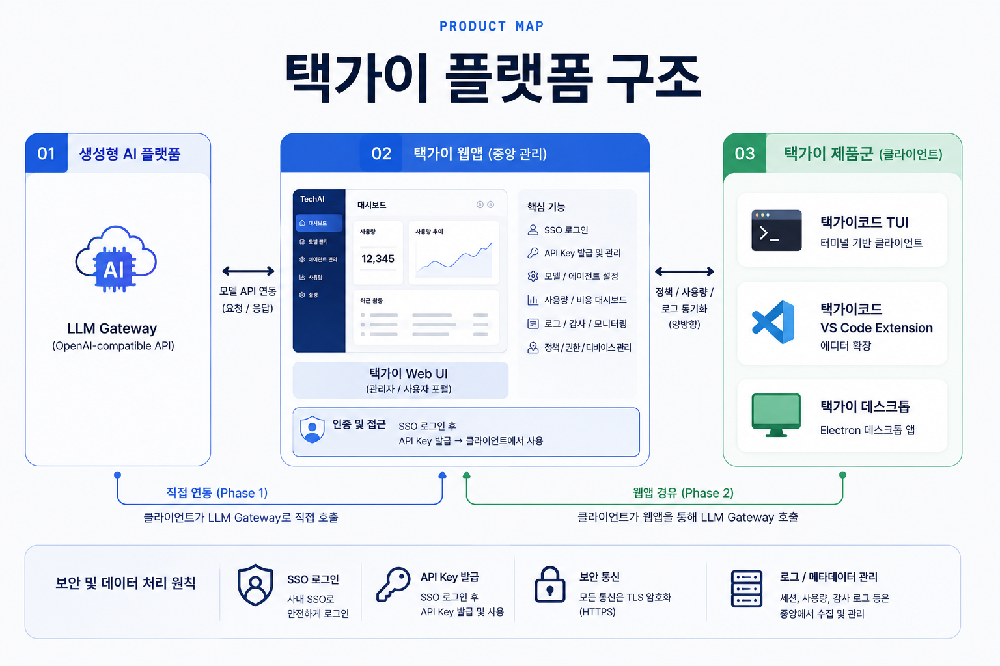
GPT·Claude·Gemini 웹처럼 접속하지만, 사내 스윙 SSO와 사번 기반 인증을 전제로 운영됩니다.
개인별 API Key 발급을 통해 택가이코드의 모델 권한과 사용량을 추적할 수 있습니다.
사내 스윙 SSO와 사번 기반 사용자 식별
부서별·개인별·모델별 요청/토큰 집계
요청/응답 메타데이터와 감사 추적
모델 오류, 도구 실패, 재시도 내역 확인

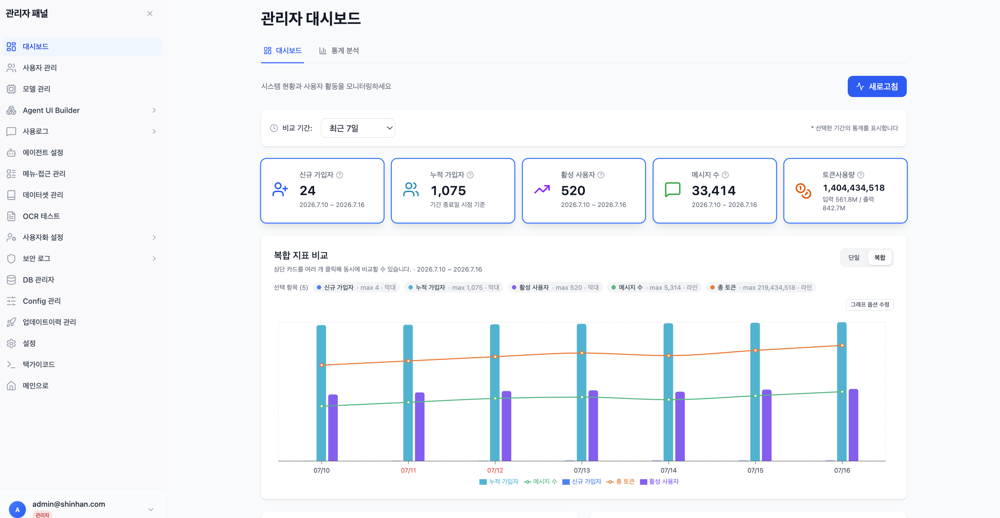
웹 챗봇이 아니라 코드베이스 안에서 실제로 작업하는 도구. 프로젝트를 읽고, 파일·Shell·git 도구를 호출하며 수정·검증 루프까지 이어갑니다.
프로젝트 루트에서 바로 실행되는 개발자용 AI 에이전트
VS Code Extension과 같은 엔진·도구 · API Key·로그로 관리
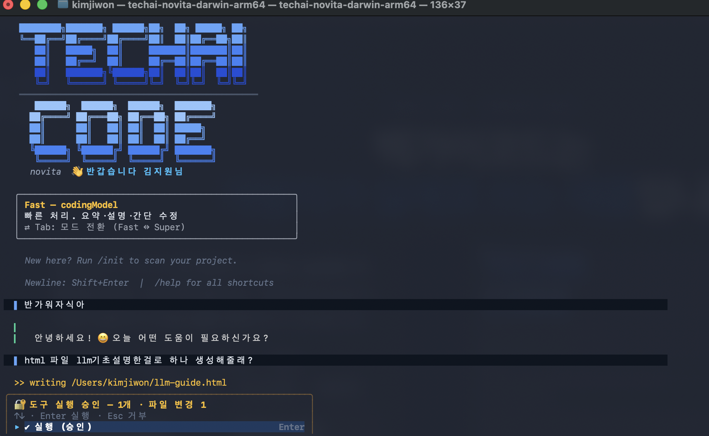


프로젝트 루트에서 바로 실행. 셸·git·파일 작업과 잘 붙습니다.
에디터 안에서 같은 로컬 서버와 도구 실행 루프를 씁니다.
LLM Tool Calling은 LLM이 직접 작업하는 것이 아니라 필요한 도구를 호출하고,
그 실행 결과를 받아 다음 판단을 이어가는 방식입니다.
외부 모델도 자율 반복이 가능하지만 현재는 더 많은 지시가 필요하다 · 택가이는 일이 끝날 때까지 “부탁 → 실행 → 확인 → 다음”을 반복한다
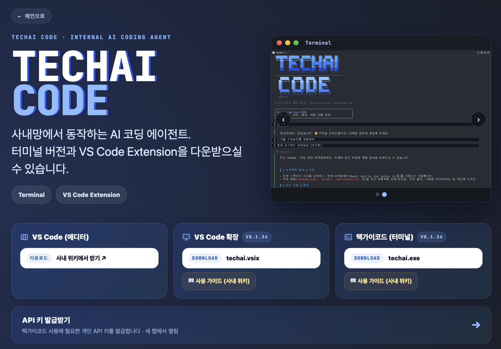
터미널·VS Code 확장 다운로드, 사용 가이드, 개인 API 키 발급을 한 페이지에서 제공.
새 버전을 웹에서 배포·게시하면 사용자는 인앱에서 최신 버전을 자동으로 안내받습니다.
점검·신규 기능·이벤트를 인앱 공지로 즉시 전달. 재발송·버전 타깃 지원.
사용자 피드백·요청을 수집·확인해 개선에 반영 — 관리자 화면에서 전부 제어.
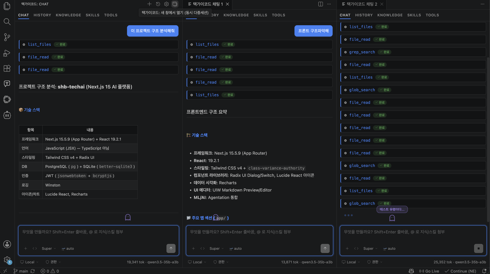
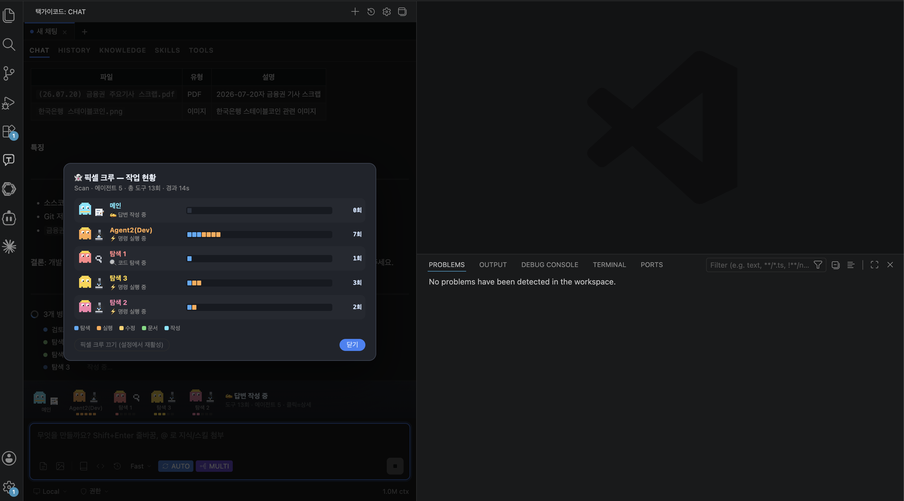
MAS(Multi-Agent System)는 한 세션 안에서 여러 에이전트가 역할을 나눠 일하는 구조다.
멀티를 켜면 하네스가 요청을 읽고 리뷰·비교·찾기 전략을 고른 뒤, 오케스트레이터가 에이전트들을 실행·관리한다.
한 에이전트가 작성하고 다른 에이전트가 검토한다
두 관점이 따로 답하고 나란히 비교한다
큰 자료를 나눠 여러 에이전트가 동시에 찾는다
내부망의 모델 한계를 고려한 구조 · 오케스트레이터가 서브에 히스토리·역할을 전달 → AgentResult를 받아 원문+부록으로 합친다 · 실패는 해당 서브만 격리
하네스 엔지니어링은 AI 에이전트가 올바른 절차로 끝까지 일하도록 작업 환경·제약 조건·피드백 루프를 설계하는 기술입니다.
개인 규칙·프로젝트 지침·지식·스킬 문서를 매 요청에 주입
MCP와 도구를 연결하고 allow·ask·deny로 행동 범위를 통제
테스트·린터·편집 후 진단 결과를 다시 LLM에 넣어 자가교정
택가이코드의 실제 구조 · rules.md + .techai.md + 지식·스킬 문서 · MCP + 권한 게이트 · run_test + diagnostics
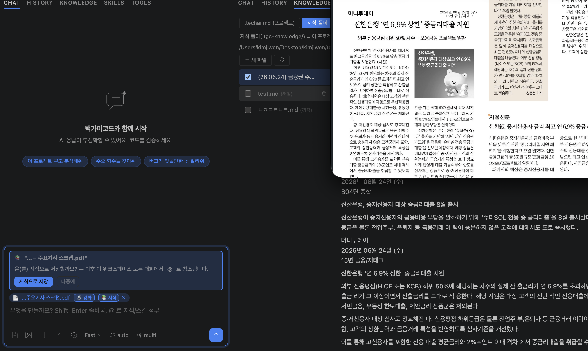
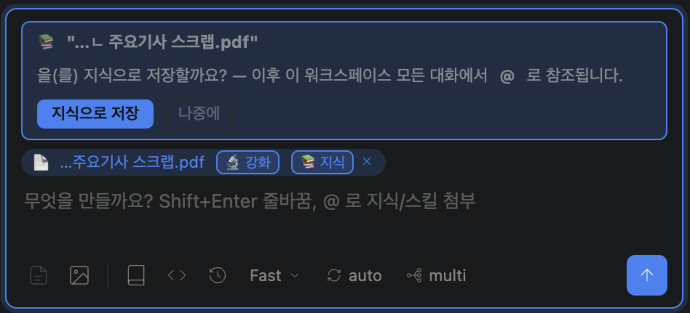
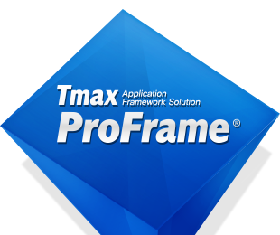
가이드·개발 문서(PDF·PPT·Word)를 파싱해 .md로 변환 → 모델이 그 지식을 참조해 개발. ProFrame뿐 아니라 WebSquare 같은 프레임워크·레거시 개발에도 당연히 적용 가능. 이미 실사용 중인 개발자 존재.
프레임워크셀에서 개발해준 ProFrame MCP로, 업데이트 시 자동 갱신되는 가이드 기준 개발 가능.
프레임워크셀 검증 완료 후 기본 탑재한 MCP.
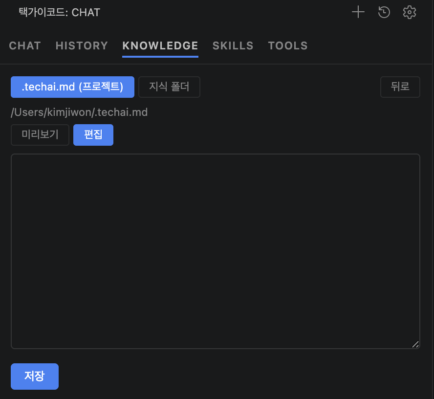
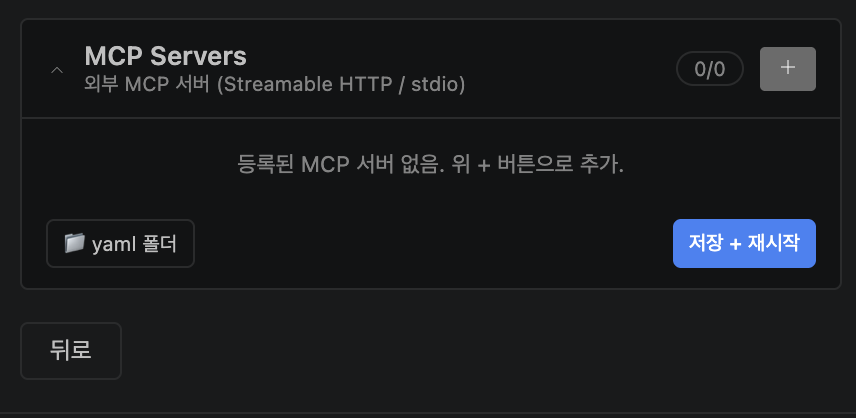
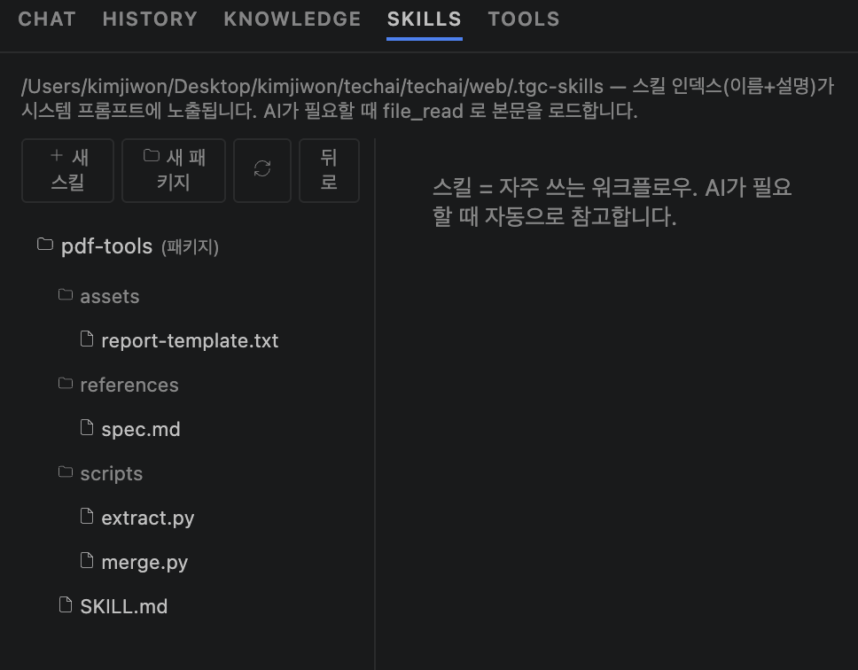
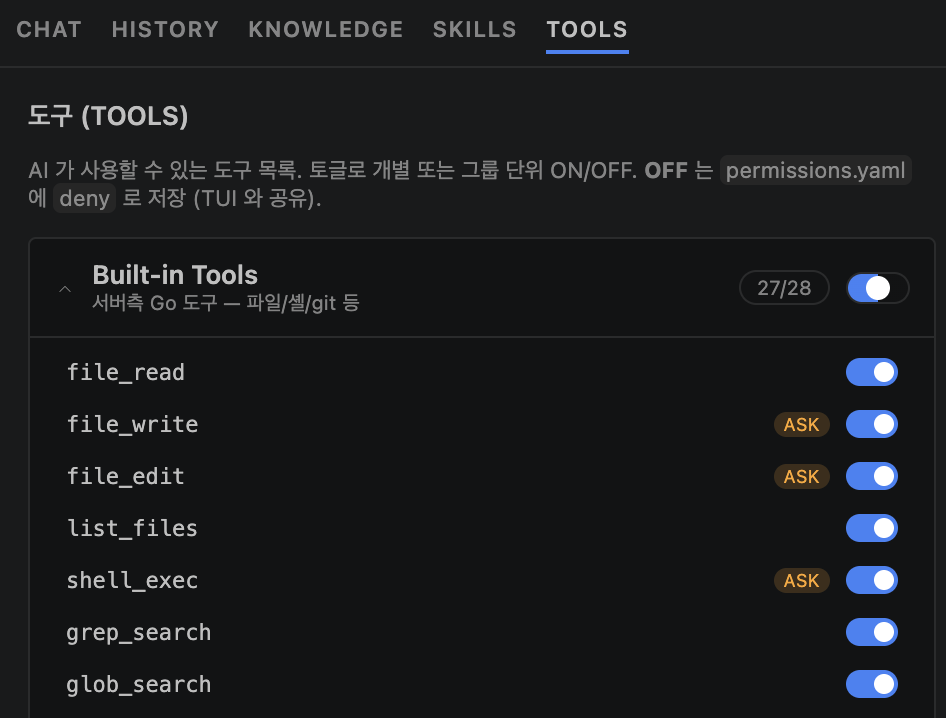

디지털서비스개발부·금융서비스개발부 등 여러 부서가 온프레미스 서버에 직접 구현해 폐쇄망 개발에 활용 — 2025년 초기 버전부터
수십 건의 실사용 후기 — 개발 부서뿐 아니라 현업·사업 부서까지
내부 POC·신사업에 활용한 땡겨요 고도화 사례 · 다수 부서에서 수시로 도입 문의
신한은행에서 일하는 외부 개발자들도 택가이코드 어시스턴트 활용 — 실제 지표 존재
Codex · Claude Code 추정 — 현 프로젝트 사용량·사용자수 기반, 연 17억 ~ 90억보수 모델(Claude Code ~17억) ~ 확산 모델(Codex ~90억) · 감사 확정치가 아닌 추정치
확정 절감 — SI·외부 솔루션 0원, 100% 자체개발 · 라이선스 회피 4.40억 (해외 온프렘 대비 · 현금성)
중소·대기업 비롯한 상용 솔루션에 절대 뒤지지 않는 성능·사용성
외부 업체 도움없이 내부 인력만으로 지속 유지보수·기능강화 · 새 모델이 출시될 때마다 자동 업그레이드
“운영거래 확인을 위한 SQL 쿼리분석, 운영 이슈를 확인할 때 복잡한 쿼리문을 분석해야 하는 경우가 많은데 택가이코드를 통해 빠르고 정확하게 분석하여 문제해결을 하는데에 많은 도움을 받았습니다.”
“웹스퀘어 내 화면개발 진행 시 개발시간 단축 — 백엔드 거래를 호출하려면 DataCollection, submission 등에 대한 개발이 필요한데, 로직오류가 아닌 변수명·문자열 처리의 단순 오탈자로 정상수행이 안 되는 경우가 정말 많습니다. 이전에는 ‘이 코드가 왜 안돌아가지?’ 하며 한 줄 한 줄 다시 디버깅해야 했는데, 택가이코드에게 물어보고 10분 만에 바로 해결하여 빠르게 개발을 끝낼 수 있었습니다! 최근에도 꾸준히 업데이트되어 성능이 계속 향상되고 있는 택가이코드, 앞으로도 응원하고 기대하겠습니다.”
“과거에는 한땀한땀 프로그램을 열어서 확인해야 했지만, 이제 택가이 코드를 활용함으로써 업무 시간을 단축하고 영향도를 쉽게 파악할 수 있게 되었습니다. 이러한 편의성을 가진 택가이코드가 더 많은 직원분들이 활용하여 업무 효율성을 높였으면 좋겠습니다. 지속적인 업데이트와 새로운 기능 추가, 성능 향상 덕분에 외부 AI를 사용하는 일도 줄어들었습니다! 앞으로 얼마나 더 발전할지 기대됩니다! 지속적인 업데이트 감사합니다~”
“에어갭 환경에서도 고성능 모델을 사용할 수 있도록 적극적으로 반입을 추진해 주셔서 감사합니다. 뛰어난 AI 코드 어시스턴트의 도움을 받으면서 업무 생산성이 눈에 띄게 올라간 것을 매일 실감하고 있습니다. 이토록 제한된 환경에서 훌륭한 AI의 지원을 가능하게 만들어주신 택가이코드 덕분에, 야근도 많이 줄고 마침내 ‘저녁 있는 삶’을 누리게 되었습니다. 정말 감사합니다!”
“AI Agent를 사용할 수 있게 되면서 필요한 정보를 검색하는 데에 많은 시간 단축이 되었습니다. 업무를 빨리 끝낼 수 있어 많은 도움이 되고 있습니다! 김지원프로님 행복만 하세요 ㅎㅎ”
“택가이코드를 통해 변경 전, 후 코드를 주고 로직 에러를 1차적으로 검증할 수 있었고, 효율적인 SQL을 작성할 수 있도록 도움을 많이 받고 있습니다. 정말 감사합니다.”
“폐쇄망인 은행 내부 개발망에서 이정도 AI 개발툴을 사용할 수 있다는 것이 놀라웠습니다. 외부망에서만 가능할 줄 알았던 이러한 툴을 VScode에서 Extension으로 연동하여 쓸 수 있도록 최적화 개발이 정말 잘 되어있다는 생각이 듭니다. 김지원 프로가 고생하여 추가로 다양한 기능을 업데이트 해줘서 사실상 은행 내에 Chatgpt/Claude를 쓰는 느낌이 듭니다. 인프라가 넉넉하지 않았을 텐데 주어진 인프라에서 최적의 모델을 잘 최적화하여 서빙을 한 점도 눈에 띄며 빠른 응답 속도를 제공하여 좋은 사용자 경험을 제공한 것도 감사하게 생각합니다. 덕분에 Agent 개발에 있어 많은 시간 단축이 있었고 앞으로도 꾸준히 최신 AI 기술들을 팔로우업해서 행내 개발 환경에 잘 적용 부탁드립니다! 감사합니다”
“택가이코드를 활용하면서, 반복적이거나 구조적인 코드 개선 작업 등 리팩토링 작업의 편의성이 크게 향상되었고, 개발 효율성 또한 높아졌습니다. 또한 단순히 일정에 쫓겨 개발을 진행하기보다, 더 나은 설계와 구현 방향에 대해 고민하며 개발할 수 있는 환경이 만들어진 것 같아 감사하게 생각합니다! 특히 초기 설계구조를 수립하고, 아키텍처 방향성을 검토하는 과정에서 적극 활용함으로써 보다 체계적이고 효율적인 개발을 수행할 수 있게 된 거 같습니다 ㅎ.ㅎ”
“개발 방향성을 잡고 설계하는데 많은 도움이 되었습니다. 빈 공책에 손으로 써가면서 머릿속으로 고민하고 생각하는 시간보다 AI와 함께 답변을 도출했을 때 개발속도도 훨씬 빠르고 결과물도 더 빨리 나왔습니다. 특히 VS Code에 붙여서 기존 코드를 레퍼런스로 삼아 고칠 부분을 같이 논의하는 방식으로 개발하니 개발 편의성도 많이 올라가서 편리합니다.”
“내부망에서 택가이 코드 덕분에 개발만이 아니라 테이블 신청서 작성과 같은 피로도 높은 문서작업에서도 큰 도움이 되었습니다. 높아진 업무효율에 앞으로 진행할 프로젝트들이 기대되며 택가이의 지속적인 업데이트 또한 기대가 됩니다.”
“내부망 AI임에도 똑똑한 텍가이코드 덕분에 업무효율이 매우 늘었습니다. Vscode 텍가이 최고!”
“현재 함께 작업하던 프로님께서 OJT로 발령이 나서, 대체 인력 없이 혼자 업무를 진행해야 하는 상황이었으나 지원 프로님께서 웹 기반 택가이 서비스에 더해 VSCode 환경에서도 직접 연동해 주셨습니다. 덕분에 IDE 내에서 바로 파일을 불러와 오타, 로직 오류, 런타임 에러 등을 즉각 검증할 수 있게 되었고, 개발 산출물 검증 측면에서 평소 대비 업무 효율이 크게 향상되었습니다. 기존에 작성된 복잡한 쿼리나 쉘 스크립트의 주석과 코드를 빠르게 학습하여 새로운 비즈니스 로직을 설계하는 과정에서도 큰 도움을 받았습니다. 아울러 현업이나 영업점에 전달해야 할 기술적 내용을 쉽게 요약·정리해 주는 역할도 톡톡히 해내어, 운영 업무 관리에도 큰 도움이 되고 있습니다.”
“복잡한 금융 데이터를 가공하고 비즈니스 로직을 반영하는데 있어서 AI를 통해 쉽게 해결했습니다. 과거 해당 로직을 반영하기 위해 몇번의 회의를 거쳐야 했으며 검증까지 2-3일이 걸릴 일을 단 1시간 만에 가공 로직을 짜주어 검증까지 완료하였습니다. 또 변경된 소스를 반영하는데 있어서 은행의 GITSOP과 연동하여 개발환경에서 형상관리를 실수 없이 자연어로 해결할 수 있었습니다. 업무 효율화와 편의성에서 과거와 비교할 수 없는 생산성이 증가하였습니다. 이게 바로 은행에서의 혁신 아닐까요?”
“사내 보안 정책상 외부 클라우드 API 호출이 제한돼 있었고, 실시간 AI Agent 활용이 어려운 상황이었습니다. 이를 해결하기 위해 온프레미스 서버에 Agent 시스템을 직접 배포하고 클라이언트 연결 인터페이스를 제공해주신 김지원 프로님께 감사를 표합니다. 도입 결과 단순 반복 개발건 70% 시간단축, 만족도 5점에 5점입니다.”
“기획서나 보고서 초안 작성할 때 매우매우 유용하게 활용하고 있습니다. 기본 구조를 잡아주다보니, 초안 작성 시간을 줄이는 데 도움이 되고 있습니다! 특히 아이디어를 보고서 형식으로 다듬을 때 택가이가 있어서 빠르고 편리하게 작성할 수 있습니다. 앞으로도 애용할게요!”
“최신 텍가이 버전에서 사이즈가 큰 프로젝트에서도 끊기지 않고 수행되어 너무 좋습니다.”
“인터넷 망에서 공부를 하며 클로드 코드를 접하였을 때 은행 개발 업무에도 접목되면 업무능률이 오르겠구나 싶었습니다. 내부망에 있는 택가이코드를 사용해보니 기본적인 문법 에러나, 완벽하진 않아도 로직 에러 등을 고치는 데 수월해졌습니다. AX 관련 업무는 빠른 PoC 개발이 필수적인데, 택가이코드는 이러한 업무에 정말 적합한 기능으로 보입니다. 택가이코드를 통해 앞으로도 행내 개발 환경 발전 가능성에 기대감을 갖게 되었습니다. 그리고 택가이코드와 같은 에이전트 시스템을 모두가 같이 사용하기 위해선 하네스와 같은 공통 제약사항을 행내에서 확립하여 조금 더 미래지향적인 개발 문화가 구축되었으면 좋겠습니다.”
“외부망에서 Cursor, Gemini-CLI, Antigravity 등을 써보면서 코딩의 패러다임이 완전히 변화했구나를 느끼고 있었는데 택가이가 발전하면 발전할수록 사내망에서의 코딩 패러다임도 곧 변화되겠구나 느껴집니다. 지식폴더, Tools를 활용해 좀 더 체계화돼서 개발을 하고 있고, 더 나아가 내부 관리자사이트 정도는 아예 택가이코드를 활용해볼까 생각 중입니다. 택가이코드가 있어 제 아이디어를 많이 실현시켜볼 수 있던 것 같습니다. 앞으로도 더 발전될 것이라 굳게 믿습니다. 감사합니다.”
“사내망이라는 엄격한 보안 환경 안에서도 최고 수준의 AI 개발 툴을 자체적으로 테스트해 보았다는 점에서 기술적으로 매우 큰 의미가 있었습니다. 현업 및 개발 전담반(기획, 배달앱 등)에서 한 달간 적극적으로 체감해 본 결과, 생각했던 것보다 모델의 분석 및 변환 성능이 압도적으로 우수하다는 공통된 평가를 얻었습니다.”
“1 Team 1 Agent 과제 수행 중, 은행 내부망 환경에서도 AI Coding Agent가 코드 자동 생성 및 검증 과정에 실제로 활용될 수 있다는 점에 큰 놀라움을 느꼈습니다. 향후 테크그룹의 개발, 운영 프로세스 전반에 폭넓게 적용되어 조직 전반의 생산성 향상을 이끌기를 기대합니다.”
“업무 진행하면서 많은 도움이 되었습니다. 주기적인 업데이트 잘 부탁드립니다!”